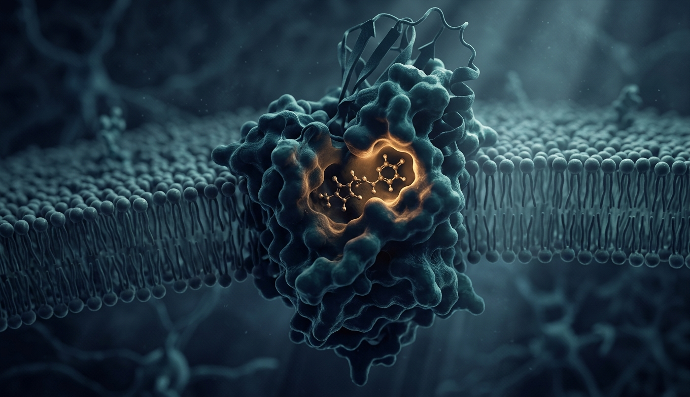
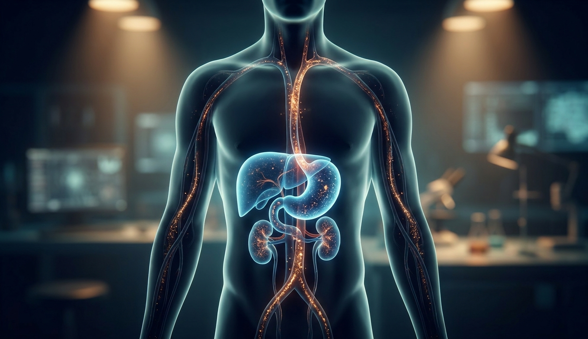
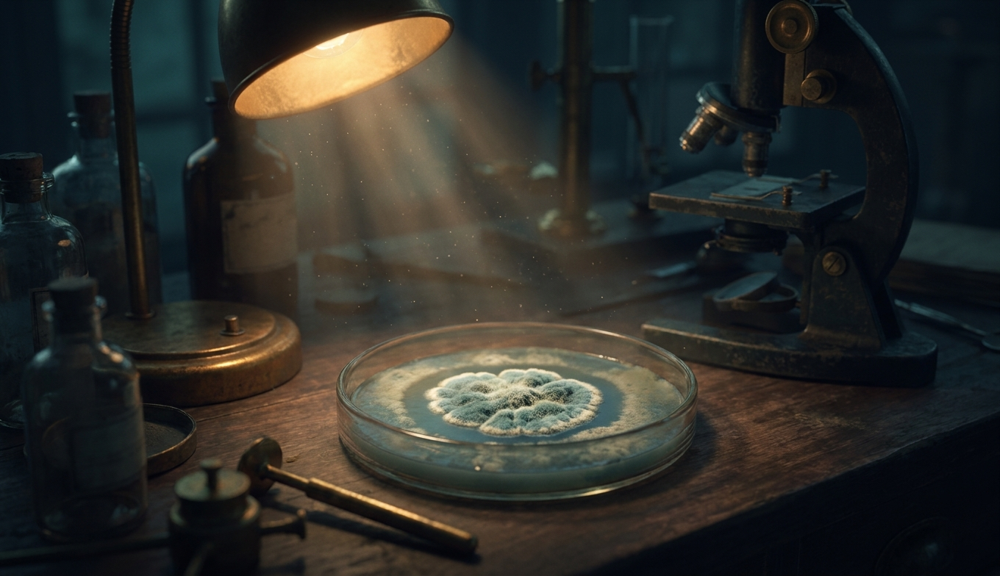
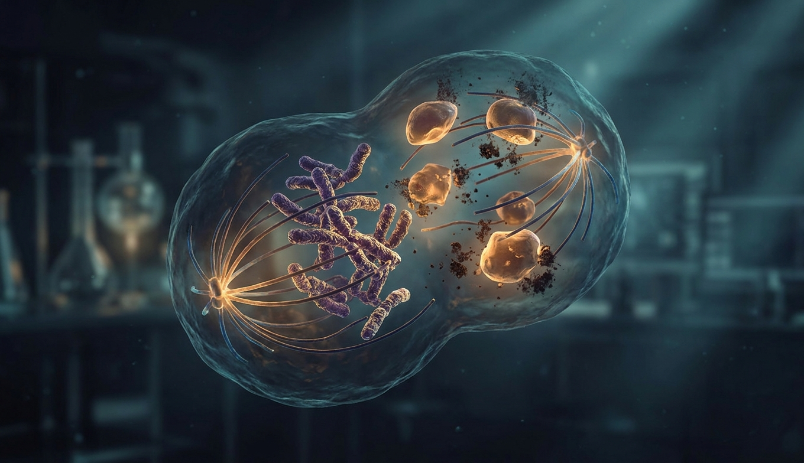
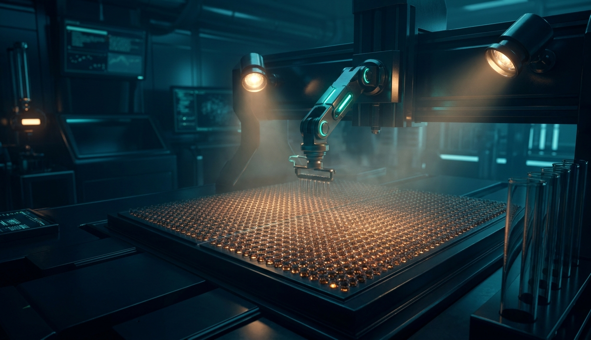
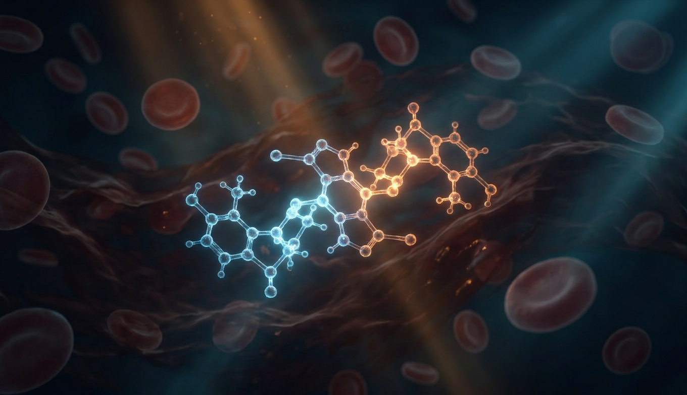
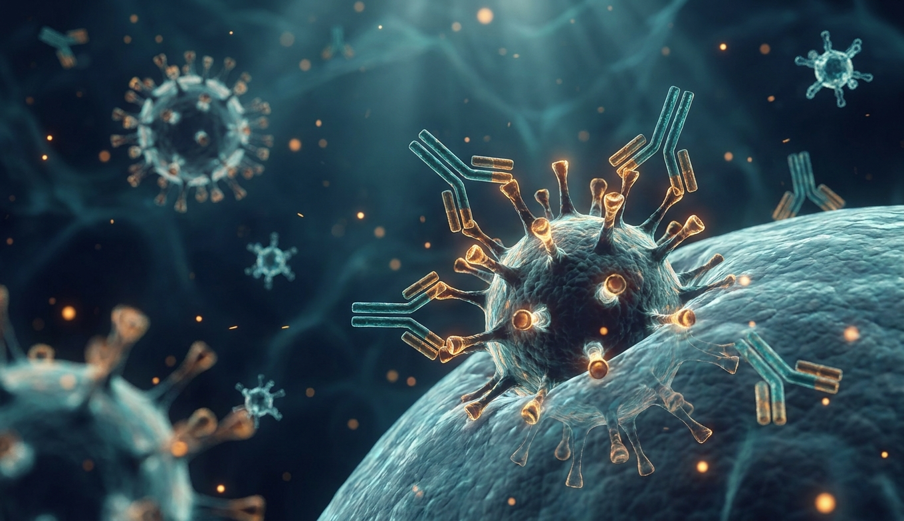
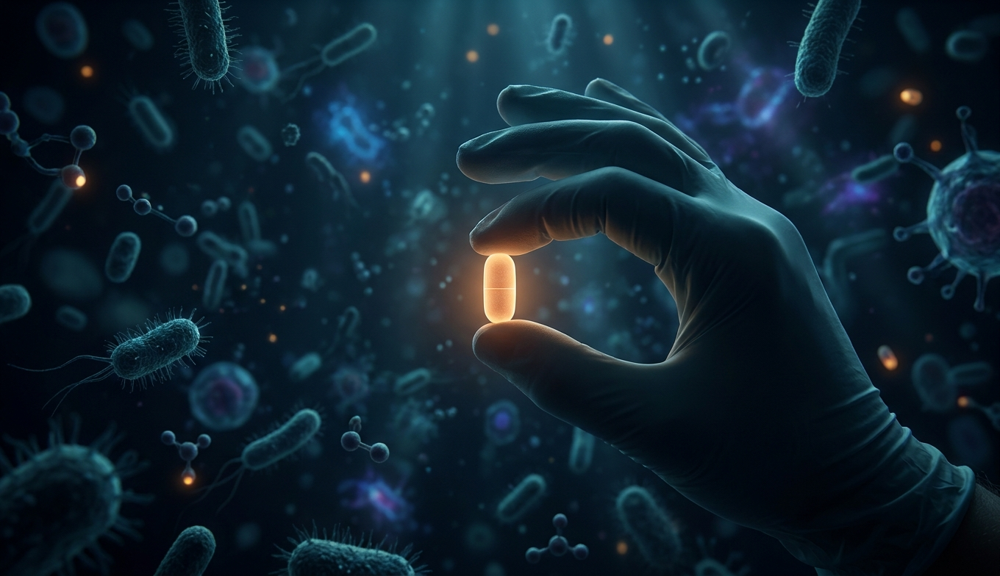

Лекарство ничего не «лечит». Оно связывается с одним конкретным белком и меняет его поведение. Всё остальное — следствия.

Мишень — это полдела. Сначала молекула должна выжить в желудке, проскочить печень, доехать до нужного органа и не быть вымытой почками через полчаса.

Бактерия — живая клетка, ты — набор живых клеток. Весь фокус антибиотика — найти то, что есть у неё и нет у тебя, и ударить именно туда.

Рак, аутоиммунка, отторжение трансплантата. Тут врага не отличить по клеточной стенке — он сделан из тебя. Приходится бить по тому, чем он злоупотребляет.

Двенадцать лет, два миллиарда долларов и девяносто процентов провалов на последнем этапе. Разбираем конвейер, из которого выходит одна молекула из десяти тысяч.

Средний пациент старше 65 принимает 5+ препаратов. Каждая пара может мешать другой в печени, в почках, на рецепторе — и это главная предотвратимая причина смертей от лекарств.

Вирус не живёт сам — он арендует твою клетку. Значит, бить надо по тому, что он приносит с собой, и это гораздо более узкая цель.

Таблетка → желудок → воротная вена → CYP450 → кровь → мембрана → карман белка → конформация → каскад → гены → клетка → орган → ты. Нанометры молекулы против метров тела — и на каждом уровне она может не дойти, дойти не туда или дойти слишком хорошо.